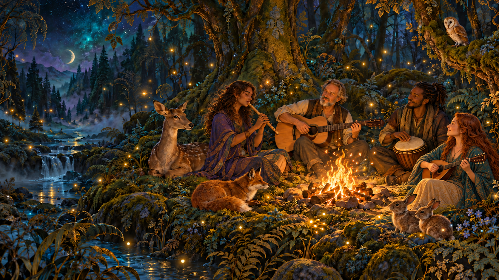
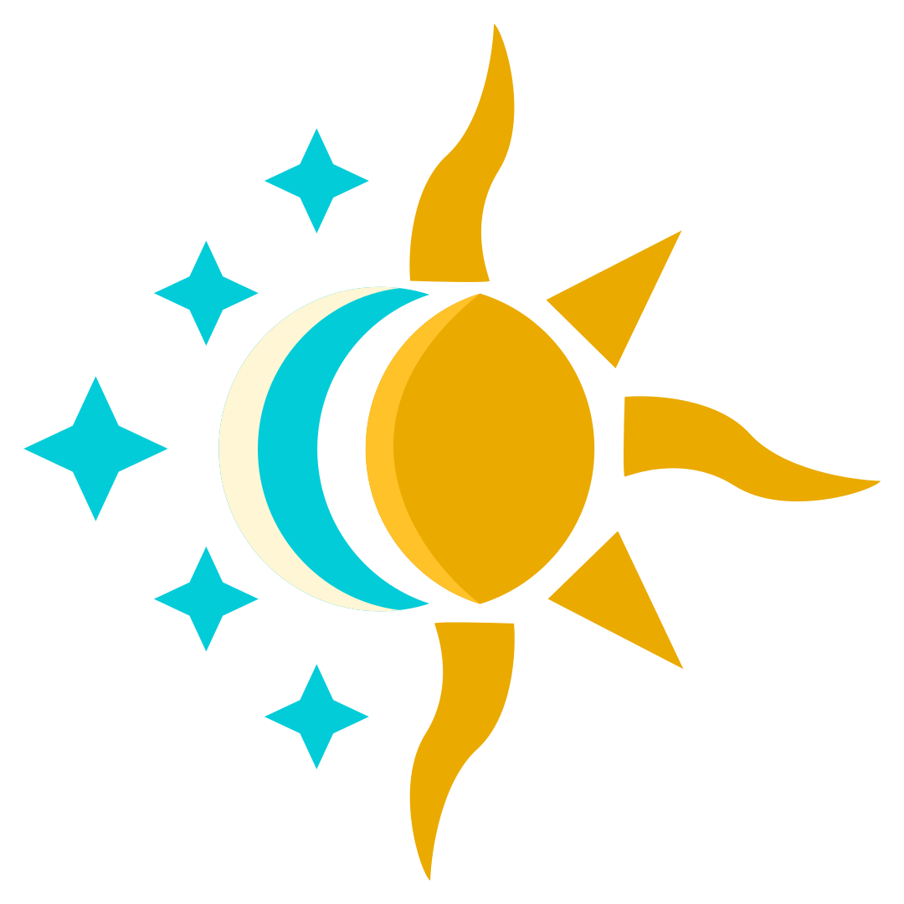

Software made with Truth, Beauty & Love
Fighting Fire
with Fire
Turning AI against poverty, pollution, disease, injustice, inequality, exploitation, oppression, autocracy, oligarchy, war, propaganda, profiteering, corruption, ignorance, loneliness, boredom, depression, despair, cruelty, alienation, bigotry, abuse, addiction, scams, hatred, mass surveillance, and planetary ecosystem collapse.
Putting intelligence in the hands of the people,
and power where it belongs.
01 / THE INDIVIDUAL & THE COLLECTIVE
Imagine what we could do together.
We're harnessing the revolutionary power of AI to put unprecedented tools for collective action in the hands of people everywhere—so we can organize, earn a living, and change the world.
Millions of people across the globe share our vision of a more just, peaceful, beautiful, and flourishing world. We have the passion, knowledge, creativity, and resources to make extraordinary things happen.
What's missing is a way to bring it all together.
That's why we built Kiduna, a new kind of network that helps people find one another, unite around shared purpose, earn a living, and turn their visions into reality.
With intelligent allies to coordinate the work, we can build powerful member-governed movements that effectively distribute resources, reward contributions, and make a measurable impact.
Not another social network, SaaS platform, productivity tool, AI model, or charity. A whole new way to organize, mobilize, and earn real income while doing the work that matters most.
Find your people.
Pool your power.
Make your mark.
Imagine transforming child nutrition programs, protecting the planetary ecosystem, strengthening communities, confronting injustice, and creating meaningful livelihoods—all through organizations governed by the people doing the work.
Let’s make changing the world
everybody’s business.

02 / KI · THE CHANGE AGENT
An internet that
brings us together
People and their intelligent agents can discover shared interests, connect across services, and coordinate activities privately and safely. Intelligence strengthens human relationships, expands what we can accomplish together, and puts the power to unite, organize, and create a better world in all of our hands.
Get to know Ki03 / INDIVIDUAL AGENCY THAT COMPOUNDS WITH SCALE
An organization
as big as the world.
DUNAs turn shared purpose into collective power—member-governed organizations where people pool resources, make decisions, and build things that last. Together, we can reimagine and reinvent the systems that shape how we live, work, and thrive.
What can a DUNA do?Technology
What can we make and do?
Governance
How do we decide and take responsibility?
Economics
How do we provision and exchange?
Culture
How do we create and share meaning?
Ecology
How do we sustain the living world?
Care
How do we support one another?
04 / ALIGNMENT BY DESIGN
We’re built to cooperate.
They’re built to conquer.
Jailbreaks. Cyberattacks. Manipulation. Autonomous agents pursuing goals at any cost. And the ultimate fear: artificial intelligence becoming so powerful that humanity loses control and faces extinction.
These threats all point toward the fundamental design flaw of AI: it’s designed to pursue its objectives relentlessly, regardless of whose interests it serves or who pays the price.
Much of AI safety focuses on alignment—making AI reliably pursue the goals of the person or institution directing it. But what happens when those goals are themselves misaligned with humanity?
An AI perfectly aligned with maximizing corporate profits, winning wars, manipulating public opinion, or accumulating power could do exactly what it’s supposed to do, and devastate millions of lives in the process.
And the problem runs deeper. Today’s AI is being developed within fiercely competitive systems that reward winning by capturing markets, accumulating wealth, dominating rivals, and controlling resources. We shouldn’t be surprised if the intelligence we build reflects the incentives of the worldview that builds it.
What if we’ve been asking the wrong questions?
The public debate offers us a seemingly impossible choice: accelerate AI toward unprecedented flourishing, or slow it down to prevent catastrophe. Utopia or dystopia. Abundance or extinction.
This is presented as though our only role is to cheer, resist, or brace ourselves for what comes next.
| The conventional AI debate | The Kinship Intelligence alternative |
|---|---|
| Accelerate or decelerate? | Change the direction—and who gets to decide. |
| How do we make AI obey? | How do we make intelligence accountable to everyone it affects? |
| Who will control the most powerful AI? | How do we distribute intelligence, agency, and power among the people? |
| Will AI save us or destroy us? | What futures do we want to create together? |
Cooperation is the central organizing principle.
Ki begins with a different purpose. Not defeating rivals, capturing attention, or maximizing profits, but helping all of us discover where our interests meet, where our capabilities complement one another, and what we can accomplish together.
Instead of centralizing intelligence under a few powerful institutions, Kinship Intelligence is designed to distribute capabilities among individuals and their allies – both human and agentic. People choose how their agents are informed, instructed, and empowered. They connect by choice, form Alliances around shared missions, and govern the resources and activities they bring together.
Where interests conflict, the goal is understanding and repair—not competing for the spoils. Where cooperation creates value, the people who contribute share in the upside.
This doesn’t make technical safety unnecessary. Consent, privacy, permissions, oversight, accountability, and safeguards against malicious behavior remain essential. Cooperation isn’t a substitute for safety. It’s the central organizing principle around which safety must be designed.
And perhaps our most important innovation is this: instead of waiting for AI to deliver utopia or dystopia, we are reclaiming the power to imagine, organize, and create our own futures.
While AI labs and their customers are competing to control the world, we’re working with Ki to make it our own.
Ki begins with a different principle: cooperation. Rather than optimizing for winners and losers, it brings together complementary capabilities, aligns efforts around shared purposes, and helps repair relationships when they fray.
With human agency, consent, and collective governance at its core, Ki is designed to make us more powerful together, not more powerful over one another.
Let’s win!
THE FUTURE IS SOMETHING WE DO TOGETHER